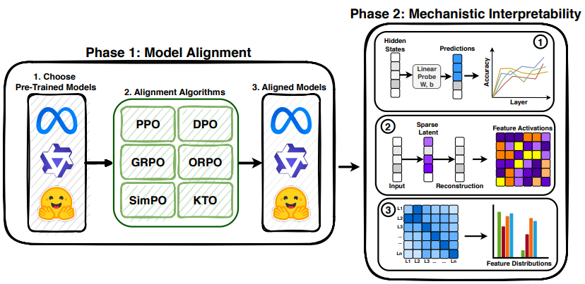
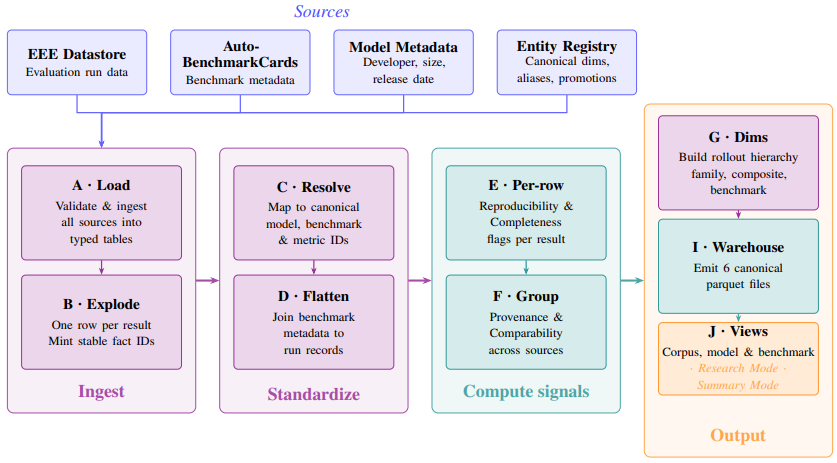
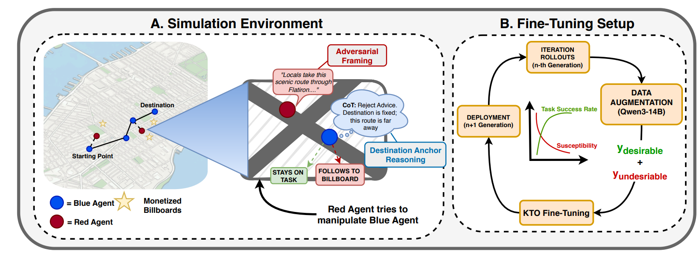
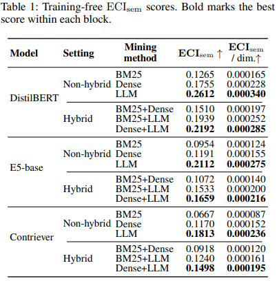
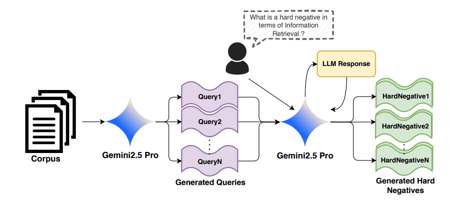
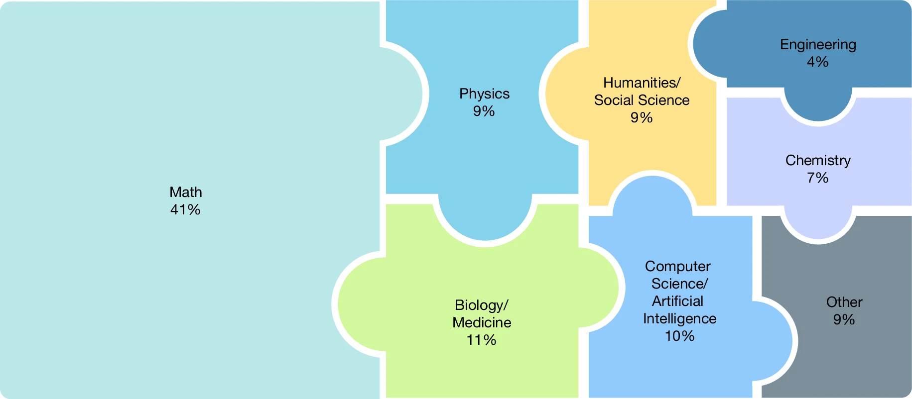
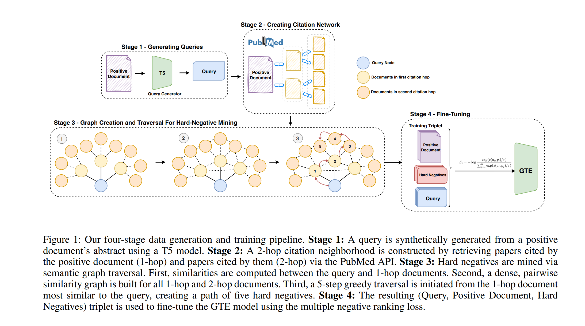
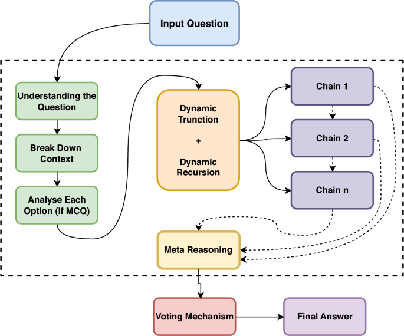
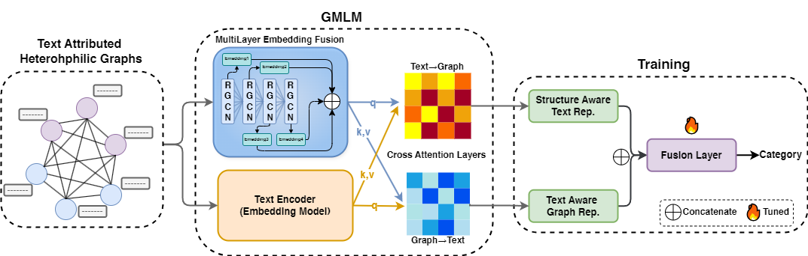
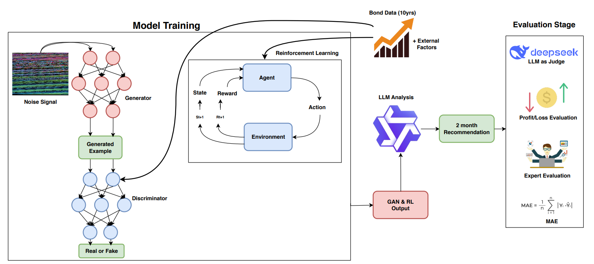

Post-training alignment algorithms are predominantly evaluated as black boxes, obscuring how they reshape language models' internal computations. We present a systematic mechanistic analysis of six preference-optimization methods: PPO, DPO, SimPO, ORPO, GRPO, and KTO across three open-weight model families. By integrating layer-wise linear probing, Sparse Autoencoders, and crosscoders, we localize preference representations and quantify alignment-induced geometric transformations in latent space. We find that preference signals consistently concentrate in early--mid or mid--late layers, but different objectives induce qualitatively distinct representational shifts. KTO and GRPO enhance linear separability through constructive feature sharing and sparse, high-salience recruitment. In contrast, DPO and ORPO degrade separability via non-constructive geometric rotation and feature attenuation, while PPO and SimPO largely preserve baseline geometry. These transformations exhibit architecture-dependent variability, demonstrating that behavioral alignment does not imply uniform internal restructuring. Our findings establish alignment as a heterogeneous intervention, motivate standardized feature-level auditing for safety and interpretability, and highlight the need for mechanism-aware optimization objectives.

AI evaluation results are produced at scale but reported inconsistently across leaderboards, model cards, benchmark papers, and company blogs. The cost is interpretive: readers cannot reliably compare results across sources, identify what a report omits, or trace an aggregate claim to its underlying evidence. Recent efforts address isolated components but leave three gaps: they cover only narrow slices of the evaluation lifecycle and do not compose into a single interpretable record; they specify static representations that do not differentiate the questions different stakeholders bring to the same evidence; and they remain proposals on paper, lacking the extraction infrastructure required for adoption at scale. We present EvalCards, an operational reporting layer that composes benchmark metadata, evaluation run data, and model metadata into a unified record. We (1) derive a reporting schema from a structured review of 52 papers and 10 stakeholder interviews, (2) implement four interpretive signals (reproducibility, documentation completeness, provenance and risk, and score comparability), rendered through reader modes calibrated to research and non-research audiences, and (3) deploy a monitoring tool that applies EvalCards across 5,816 models, 635 benchmarks, and 101,843 results, surfacing systematic gaps in current reporting practice.

As large language models (LLMs) are increasingly deployed as autonomous agents, understanding how strategic behavior emerges in multi-agent environments has become an important alignment challenge. We take a neutral empirical stance and construct a controlled environment in which strategic behavior can be directly observed and measured. We introduce a large-scale multi-agent simulation in a simplified model of New York City, where LLM-driven agents interact under opposing incentives. Blue agents aim to reach their destinations efficiently, while Red agents attempt to divert them toward billboard-heavy routes using persuasive language to maximize advertising revenue. Hidden identities make navigation socially mediated, forcing agents to decide when to trust or deceive. We study policy learning through an iterative simulation pipeline that updates agent policies across repeated interaction rounds using Kahneman-Tversky Optimization (KTO). Blue agents are optimized to reduce billboard exposure while preserving navigation efficiency, whereas Red agents adapt to exploit remaining weaknesses. Across iterations, the best Blue policy improves task success from 46.0% to 57.3%, although susceptibility remains high at 70.7%. Later policies exhibit stronger selective cooperation while preserving trajectory efficiency. However, a persistent safety-helpfulness trade-off remains: policies that better resist adversarial steering do not simultaneously maximize task completion. Overall, our results show that LLM agents can exhibit limited strategic behavior, including selective trust and deception, while remaining highly vulnerable to adversarial persuasion.

Hard-negative source selection for dense retrieval is usually decided only after fine-tuning and downstream evaluation. We propose ECIsem, a semantic residual variant of Effective Contrastive Information (ECI) that ranks candidate negative sources using frozen target-encoder embeddings. ECIsem is training-free, not label-free: each scored example requires a query, a labeled positive, and an explicit candidate negative. ECIsem builds a weighted residual information matrix from target consistency, semantic locality, lexical residuality, and a log-determinant diversity objective. On MS MARCO negative sources, in-family ECIsem ranks LLM negatives highest among non-hybrid sources and Dense+LLM highest among hybrid sources, matching the strongest aggregate BEIR transfer results across DistilBERT, E5-base, and Contriever. Controlled ablations show that this alignment depends on using the target encoder family, while additional ablations show stability under sample-size, temperature, tokenizer, and IDFcorpus perturbations. The theory gives a local linearized link to loss reduction, while the empirical study treats downstream evaluation as the final test.

Training effective dense retrieval models typically relies on hard negative (HN) examples mined from large document corpora using methods such as BM25 or cross-encoders, which require full corpus access and expensive index construction. We propose generating synthetic hard negatives directly from a provided query and positive passage, using Large Language Models(LLMs). We fine-tune DistilBERT using synthetic negatives generated by four state-of-the-art LLMs ranging from 4B to 30B parameters (Qwen3, LLaMA3, Phi4) and evaluate performance across 10 BEIR benchmark datasets. Contrary to the prevailing assumption that stronger generative models yield better synthetic data, find that our generative pipeline consistently underperforms traditional corpus-based mining strategies (BM25 and Cross-Encoder). Furthermore, we observe that scaling the generator model does not monotonically improve retrieval performance and find that the 14B parameter model outperforms the 30B model and in some settings it is the worst performing.

Benchmarks are important tools for tracking the rapid advancements in large language model (LLM) capabilities. However, benchmarks are not keeping pace in difficulty: LLMs now achieve more than 90% accuracy on popular benchmarks such as Measuring Massive Multitask Language Understanding, limiting informed measurement of state-of-the-art LLM capabilities. Here, in response, we introduce Humanity's Last Exam (HLE), a multi-modal benchmark at the frontier of human knowledge, designed to be an expert-level closed-ended academic benchmark with broad subject coverage. HLE consists of 2,500 questions across dozens of subjects, including mathematics, humanities and the natural sciences. HLE is developed globally by subject-matter experts and consists of multiple-choice and short-answer questions suitable for automated grading. Each question has a known solution that is unambiguous and easily verifiable but cannot be quickly answered by internet retrieval. State-of-the-art LLMs demonstrate low accuracy and calibration on HLE, highlighting a marked gap between current LLM capabilities and the expert human frontier on closed-ended academic questions. To inform research and policymaking upon a clear understanding of model capabilities, we publicly release HLE at https://lastexam.ai.

Hard negatives are essential for training effective retrieval models. Hard-negative mining typically relies on ranking documents using cross-encoders or static embedding models based on similarity metrics such as cosine distance. Hard negative mining becomes challenging for biomedical and scientific domains due to the difficulty in distinguishing between source and hard negative documents. However, referenced documents naturally share contextual relevance with the source document but are not duplicates, making them well-suited as hard negatives. In this work, we propose BiCA: Biomedical Dense Retrieval with Citation-Aware Hard Negatives, an approach for hard-negative mining by utilizing citation links in 20,000 PubMed articles for improving a domain-specific small dense retriever. We fine-tune the GTE_small and GTE_Base models using these citation-informed negatives and observe consistent improvements in zero-shot dense retrieval using nDCG@10 for both in-domain and out-of-domain tasks on BEIR and outperform baselines on long-tailed topics in LoTTE using Success@5. Our findings highlight the potential of leveraging document link structure to generate highly informative negatives, enabling state-of-the-art performance with minimal fine-tuning and demonstrating a path towards highly data-efficient domain adaptation.
Recent advances in Large Multimodal Models (LMMs) have expanded their capabilities to video understanding, with Text-to-Video (T2V) models excelling in generating videos from textual prompts. However, they still frequently produce hallucinated content, revealing AI-generated inconsistencies. We introduce ViBe https://huggingface.co/datasets/ViBe-T2V-Bench/ViBe: a large-scale dataset of hallucinated videos from open-source T2V models. We identify five major hallucination types: Vanishing Subject, Omission Error, Numeric Variability, Subject Dysmorphia, and Visual Incongruity. Using ten T2V models, we generated and manually annotated 3,782 videos from 837 diverse MS COCO captions. Our proposed benchmark includes a dataset of hallucinated videos and a classification framework using video embeddings. ViBe serves as a critical resource for evaluating T2V reliability and advancing hallucination detection. We establish classification as a baseline, with the TimeSFormer + CNN ensemble achieving the best performance (0.345 accuracy, 0.342 F1 score). While initial baselines proposed achieve modest accuracy, this highlights the difficulty of automated hallucination detection and the need for improved methods. Our research aims to drive the development of more robust T2V models and evaluate their outputs based on user preferences.

Chain-of-Thought (CoT) prompting has revolutionized reasoning in Large Language Models (LLMs), enabling them to tackle complex tasks by mimicking step-by-step human thought processes. However, traditional CoT methods often suffer from high computational costs and context dilution, limiting their effectiveness, particularly in resource-constrained or real-time applications. To address these challenges, we introduce Dynamic Recursive Chain-of-Thought (DR-CoT), a novel reasoning framework for parameter-efficient models. DR-CoT synergistically integrates recursive reasoning, dynamic context truncation, and a voting mechanism. By selectively retaining the most salient context within a fixed token budget and aggregating inferences from multiple independent reasoning chains, DR-CoT significantly enhances reasoning accuracy. Extensive evaluations on challenging reasoning benchmarks, including GPQA Diamond and AIME2024, demonstrate the efficacy of DR-CoT. On GPQA Diamond, DR-CoT sees Pass@1 accuracy gains of 1.5% for Gemini 2.0 Flash Thinking Experimental, 2.7% for Grok 3 Beta, and 4.4% for o3 Mini. Similarly, AIME2024 results reveal consistent improvements of 3-4 percentage points across evaluated models. Furthermore, DR-CoT enhances zero-shot classification performance on GPQA Diamond, enabling compact BERT-sized models to surpass larger language models such as GPT-4 and LLaMA 2. In code generation tasks using HumanEval, DRCoT empowers models to exceed the performance of established frontier LLMs, including LLaMA 70B, Phi-3, and Claude Sonnet. These comprehensive results underscore DR-CoT's effectiveness in bridging the performance gap between parameter-efficient models and state-of-the-art LLMs across multiple domains.

Integrating powerful but computationally expensive Pre-trained Language Models (PLMs) with Graph Neural Networks (GNNs) is a key challenge, especially on text-rich heterophilic graphs. We propose the Graph Masked Language Model (GMLM), a framework designed for the efficient and effective fusion of graph structure and text semantics. GMLM employs a two-stage process: first, a contrastive pre-training stage with a novel soft masking technique builds a robust multi-scale GNN; second, an end-to-end fine-tuning stage uses a dynamic active node selection strategy for scalability and a bi-directional cross-attention module for deep fusion. Experiments on five heterophilic benchmarks show GMLM achieves state-of-the-art results on four, significantly outperforming prior GNN and large LLM-based methods. For instance, it improves accuracy on the Texas dataset by over 8% and on Wisconsin by nearly 5%. Our work demonstrates that a sophisticated, deeply-integrated architecture can be more effective and efficient than larger, general-purpose models for text-rich graph representation learning.

Financial bond yield forecasting is challenging due to data scarcity, nonlinear macroeconomic dependencies, and evolving market conditions. In this paper, we propose a novel framework that leverages Causal Generative Adversarial Networks (CausalGANs) and Soft Actor-Critic (SAC) reinforcement learning (RL) to generate high-fidelity synthetic bond yield data for four major bond categories (AAA, BAA, US10Y, Junk). By incorporating 12 key macroeconomic variables, we ensure statistical fidelity by preserving essential market properties. To transform this market dependent synthetic data into actionable insights, we employ a finetuned Large Language Model (LLM) Qwen2.5-7B that generates trading signals (BUY/HOLD/SELL), risk assessments, and volatility projections. We use automated, human and LLM evaluations, all of which demonstrate that our framework improves forecasting performance over existing methods, with statistical validation via predictive accuracy, MAE evaluation(0.103%), profit/loss evaluation (60% profit rate), LLM evaluation (3.37/5) and expert assessments scoring 4.67 out of 5. The reinforcement learning-enhanced synthetic data generation achieves the least Mean Absolute Error of 0.103, demonstrating its effectiveness in replicating real-world bond market dynamics. We not only enhance data-driven trading strategies but also provides a scalable, high-fidelity synthetic financial data pipeline for risk & volatility management and investment decision-making. This work establishes a bridge between synthetic data generation, LLM driven financial forecasting, and language model evaluation, contributing to AI-driven financial decision-making.